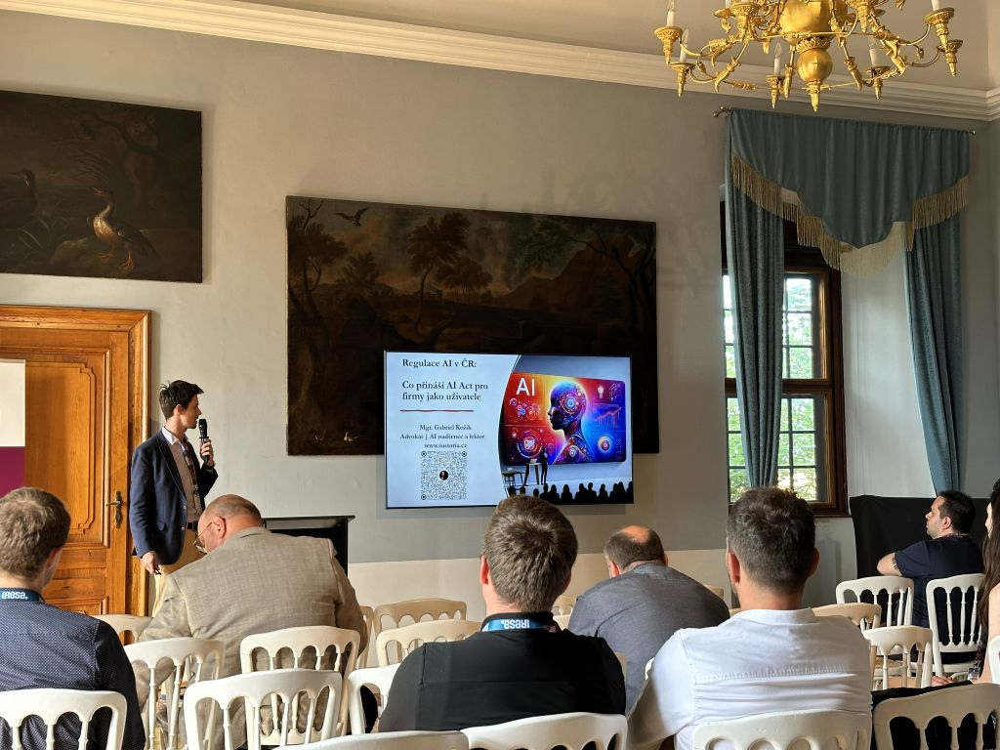
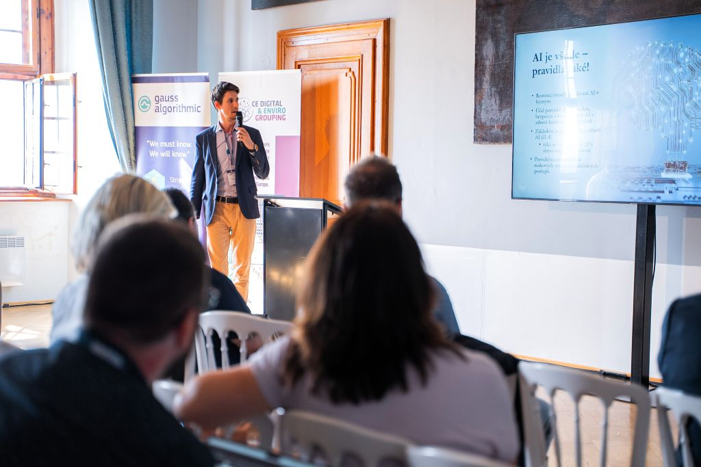

Právo a technologie v srdci Moravy: Reportáž z Česko-slovenského technologického summitu
V ĂşterĂ˝ 4. ÄŤervna 2025 oĹľil Zámek Mikulov inspirativnĂ atmosfĂ©rou ÄŚesko-slovenskĂ©ho technologickĂ©ho summitu. Byla to jedineÄŤná pĹ™ĂleĹľitost, kde se setkali lĂdĹ™i z oblasti technologiĂ, byznysu a práva, aby diskutovali o budoucnosti, která nás všechny ovlivĹuje. Naše advokátnĂ kancelář IUSTORIA byla hrdĂ˝m partnerem tĂ©to akce a já jsem mÄ›l tu ÄŤest pĹ™ispÄ›t do programu pĹ™ednáškou na aktuálnĂ tĂ©ma "Regulace AI v ÄŚR".


Regulace AI: Brzda, nebo katalyzátor inovac�
Moje pĹ™ednáška se zaměřila na praktickĂ© dopady evropskĂ©ho naĹ™ĂzenĂ AI Act (NaĹ™ĂzenĂ EU ÄŤ. 2024/1689) na ÄŤeskĂ© a slovenskĂ© firmy. CĂlem nebylo strašit sloĹľitĂ˝mi paragrafy, ale ukázat, Ĺľe správnÄ› uchopená regulace mĹŻĹľe bĂ˝t pro podnikánĂ strategickou vĂ˝hodou. Probrali jsme si klĂÄŤovĂ© body:
PĹ™Ăstup zaloĹľenĂ˝ na riziku
VysvÄ›tlili jsme si, Ĺľe AI Act nezatěžuje všechny stejnÄ›. ÄŚĂm vÄ›tšà potenciálnĂ dopad mĹŻĹľe systĂ©m mĂt na zdravĂ, bezpeÄŤnost nebo základnĂ práva, tĂm pĹ™ĂsnÄ›jšà pravidla pro nÄ›j platĂ. Rozebrali jsme si kategorie od nepĹ™ijatelnĂ©ho rizika (napĹ™. sociálnĂ skĂłrovánĂ), pĹ™es vysoce rizikovĂ© systĂ©my (napĹ™. v personalistice ÄŤi zdravotnictvĂ) aĹľ po nejběžnÄ›jšà nástroje s omezenĂ˝m rizikem.
Transparentnost jako základ důvěry
Pro vÄ›tšinu firem, kterĂ© vyuĹľĂvajĂ AI pro marketing ÄŤi komunikaci, je klĂÄŤová povinnost transparentnosti. ZdĹŻraznili jsme, proÄŤ je zásadnĂ srozumitelnÄ› informovat uĹľivatele, Ĺľe komunikujĂ s chatbotem, a jak správnÄ› oznaÄŤovat umÄ›le generovanĂ˝ obsah, tzv. "deepfakes", aby nedocházelo ke klamánĂ spotĹ™ebitelĹŻ.
Odpovědnost v praxi a ochrana dat
Diskutovali jsme o tom, Ĺľe odpovÄ›dnost za pouĹľitĂ AI systĂ©mu nese koncovĂ˝ uĹľivatel – tedy firma, která jej nasadila. ZmĂnil jsem i neoddÄ›litelnĂ© propojenĂ s GDPR. VkládánĂ osobnĂch ÄŤi citlivĂ˝ch firemnĂch dat do veĹ™ejnÄ› dostupnĂ˝ch nástrojĹŻ je obrovskĂ˝m rizikem, kterĂ©mu je tĹ™eba pĹ™edejĂt správnĂ˝m nastavenĂm internĂch procesĹŻ a vyuĹľĂvánĂm zabezpeÄŤenĂ˝ch podnikovĂ˝ch Ĺ™ešenĂ.
"NejvÄ›tšà radost jsem mÄ›l z následnĂ© diskuze. Bylo skvÄ›lĂ© vidÄ›t, Ĺľe firmy nepĹ™emýšlĂ o regulaci jako o hrozbÄ›, ale jako o pĹ™ĂleĹľitosti, jak budovat dĹŻvÄ›ru u svĂ˝ch zákaznĂkĹŻ a partnerĹŻ. PrávÄ› to je ten správnĂ˝ pĹ™Ăstup."


SetkánĂ, která inspirujĂ
CelĂ˝ den se nesl v duchu networkingu, sdĂlenĂ zkušenostĂ a navazovánĂ novĂ˝ch partnerstvĂ. ÄŚesko-slovenskĂ˝ technologickĂ˝ summit opÄ›t potvrdil, Ĺľe propojenĂ dvou blĂzkĂ˝ch trhĹŻ má obrovskĂ˝ smysl a potenciál. DÄ›kuji organizátorĹŻm za skvÄ›le pĹ™ipravenou akci a všem účastnĂkĹŻm za podnÄ›tnĂ© rozhovory. UĹľ teÄŹ se těšĂm na dalšà roÄŤnĂk!
↠Zpět na přehled článků